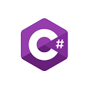

Dovednosti

|

|
 |
HTMLS HTML začínám a umím vytvořit jednoduché webové stránky, jako jsou tyto. |
JavaJavu se učím z tutoriálů na internetu, dokáži tvořit jednoduché konzolové i okenní aplikace a programovat objektově. Vlastním osvědčení, které jsem absolvoval od prážské vzdělávací společnosti GOPAS. |
C#C# nás učí ve škole, ze všech ho mám nejraději. |